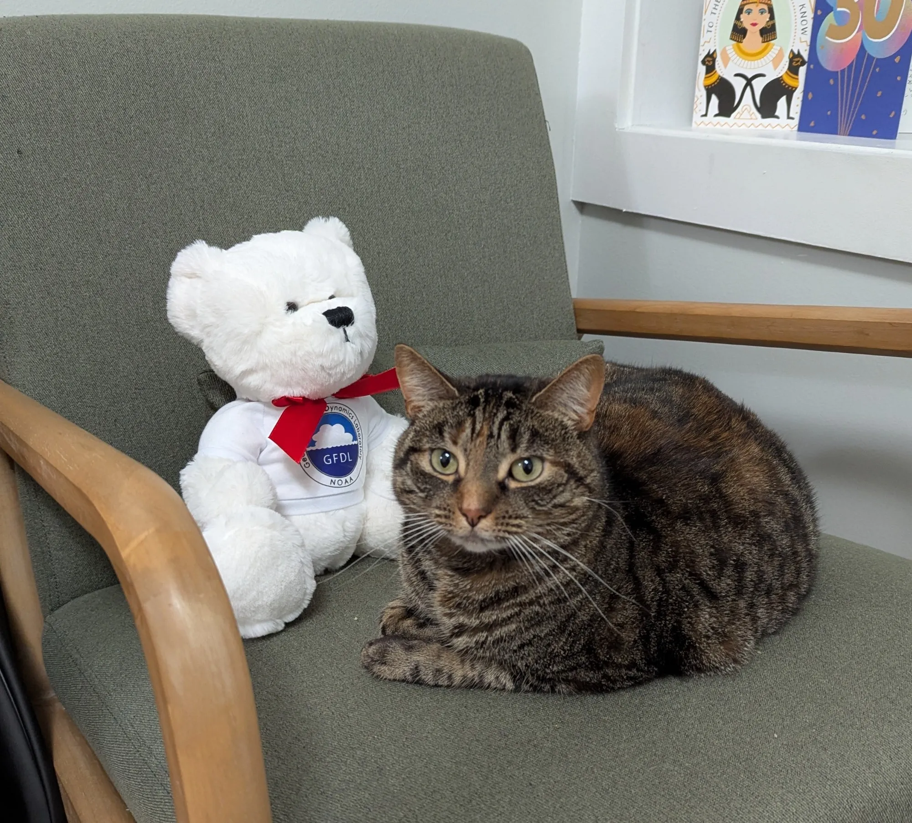

-
Andrew I.L. Williams
- home
- publications
-
menu
Research Group
Andrew Williams is an incoming Assistant Professor of Climate Science at Columbia University, starting in July 2027. His group studies tropical convection, radiative transfer, and the large-scale circulation of the atmosphere and ocean, using theory and a hierarchy of numerical models. He likes to hang out with his cat, Cleo. [CV]

Cleo Haussler-Williams
Research Assistant
Cleo's interests include bird-watching and self-care.
This could be you!
Group member
This could be you! Check out the opportunities page for any currently available positions!
This could be you!
Group member
This could be you! Check out the opportunities page for any currently available positions!